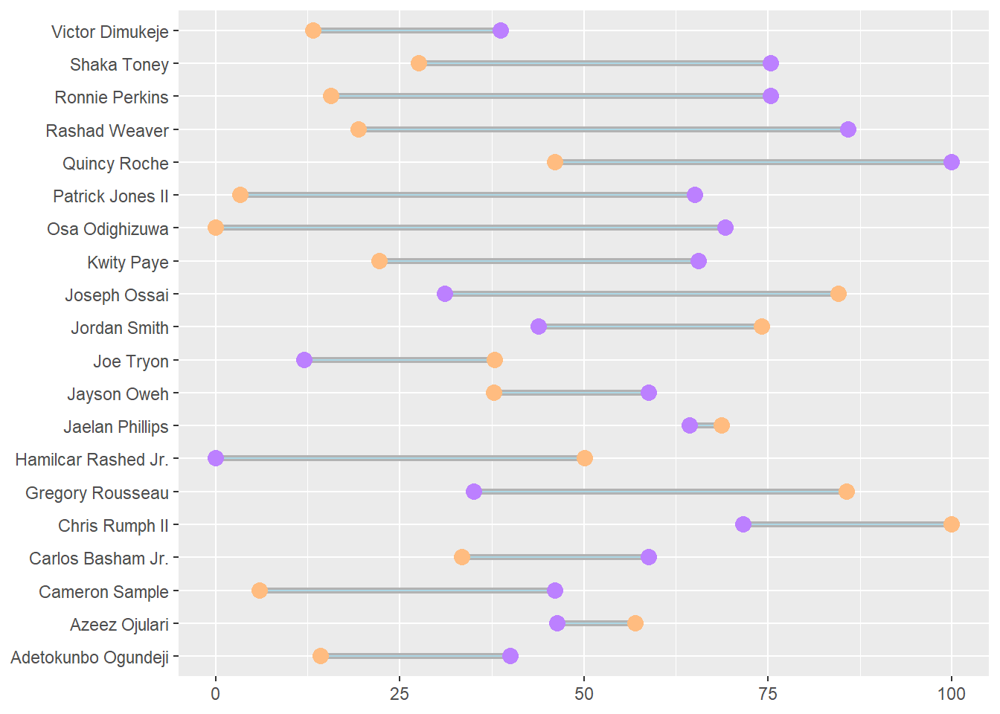
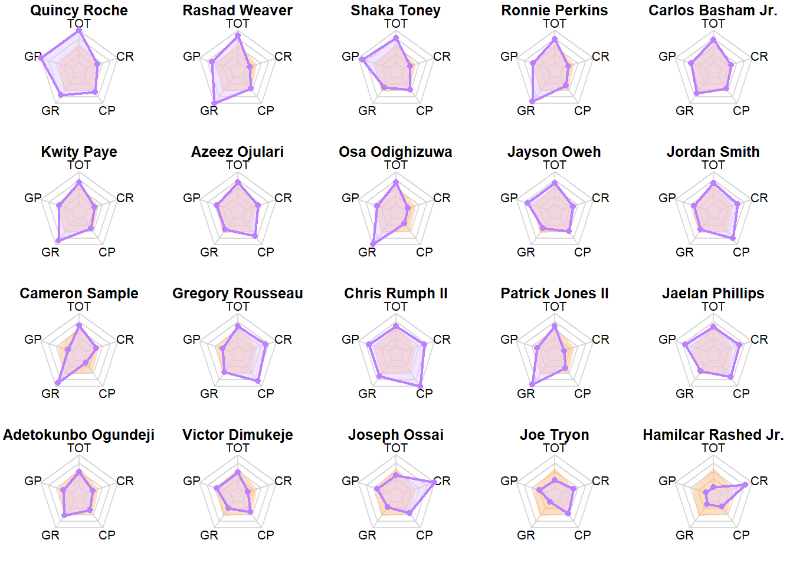

The following analysis seeks to comparatively analyze the top 20 edge rushers available in the 2021 NFL draft. Both qualitative and quantitative variables were used to measure player value. The table below summarizes these metrics:
PFF grades range from 60-100 and are presented largely unchanged throughout this analysis. The rate metrics were combined and blended to create two new metrics: Composite Pass and Composite Run. These two scores range from 0-100 and measure the overall production of each player relative to the entire player pool. Below are the components of each score:
Player Values by Category
The table below includes the PFF grades and composite score for the entirety of the player pool. The table can be sorted by column simply by clicking on the column title, and the search bar can be used to find specific players.

Player Radar Charts
Now we will look to combine our metrics and see how each player compares to the entire pool. Below are radar charts for each player, where the shaded orange area represents the group average, and the purple lines represent the individuals score in five different categories: Total PFF Grade (TOT), Pass Rush PFF Grade (GP), Run Defense PFF Grade (GR), Pass Rush Composite Grade (CP) and Run Defense Composite Grade (CR). The closer to the edge, the better a player is for a given category.

Scatter Plots
Looking at the scatter plot of PFF grades, we can see that run defense has a lot more concentration near the top than does pass rush. This highlights the notion of skill scarcity and shows that elite pass rushing is much harder to find than elite run stopping.
Score Comparisons
The extreme cases within the player comparison visual are the most interesting as they highlight instances where there is a significant difference in player value. Patrick Jones II, Osa Odighizuwa, and Rashad Weaver are three examples of players who are ranked much more favorable by PFF metrics versus the comparative scores. Comparatively, Gregory Rousseau, Joseph Ossai, and Hamlicar Rashed Jr. are all ranked much more favorably by the comparative scores versus the PFF metrics.
Player Radar Charts
The radar charts highlight the diversity of each player. Players with large purple polygons (such as Chris Rumph II, Quncy Roche, and Jordan Smith) are consistently near the top of each metric, whereas players with small areas are near the bottom. Interesting cases arise where players have one peak, such as Osa Odighizuwa, Cameron Sample, and Hamlicar Rashed Jr. These players all have a specific area that they excel at but are near the middle of the pack in every other category.
This analysis is a quick glance at a very specific subset of players. It is by no means exhaustive and will benefit from more and better data. Additionally, future research will allow for more accurately weighted models which will enhance the predictive value of the comparative scores.